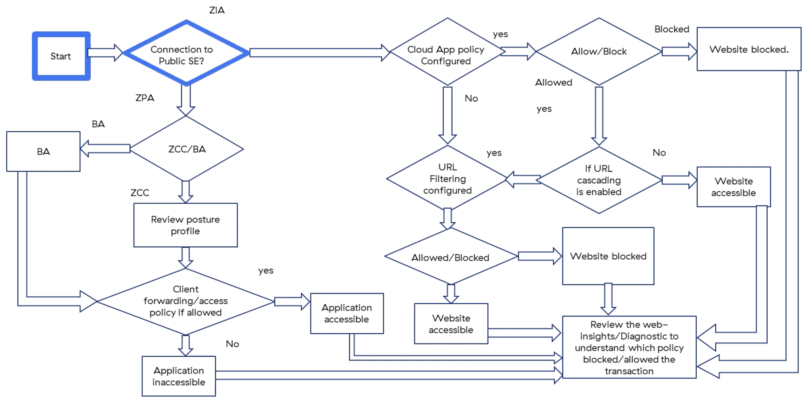
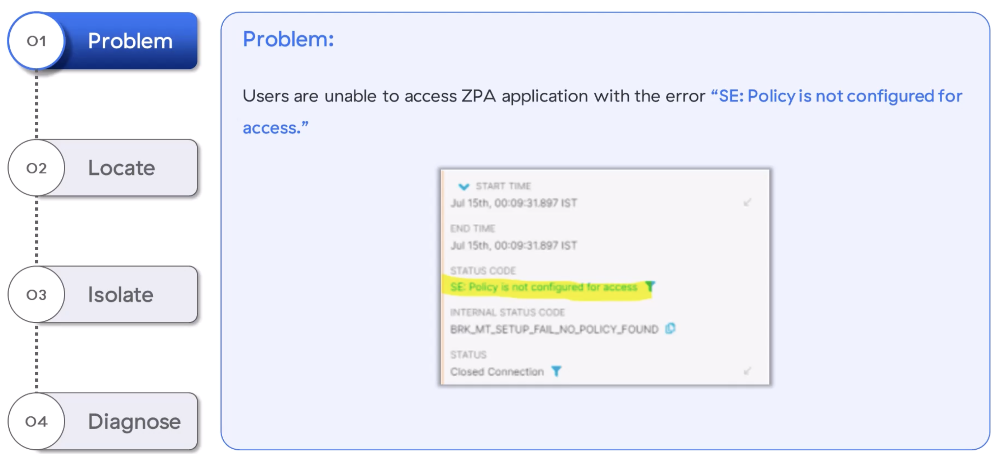
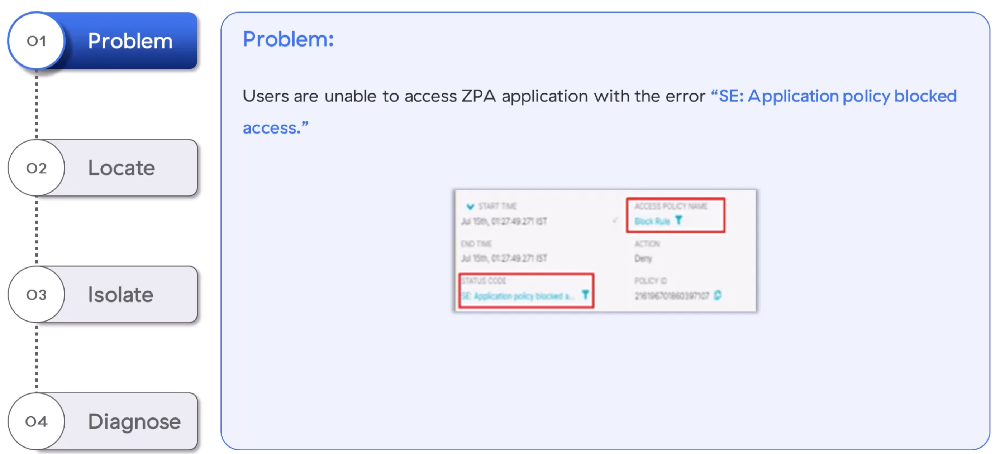

Five common policy-misconfiguration tickets — and how to localise, isolate, diagnose
"All roads lead to Web Insights and Diagnostic logs — master the filters, and you can resolve almost any policy ticket."
💭THINK FIRST · ONE FLOW, MANY POLICIES
Internet, ZPA, and Branch traffic all enter the Zero Trust Exchange — but each follows a different chain of policy checks (Cloud App Control, URL Filtering, SSL Inspection, Access Policy). Before any ticket, ask: which arm of the flow chart is this traffic on?
When a website is blocked, what does the order of policy evaluation tell you about where to start looking?
Why does the same Web Insights log answer 80% of policy tickets across all five scenarios?
Q1 — MODEL ANSWER
Traffic hits Cloud App Control first, then URL Filtering, then optional URL cascading. So a "site blocked" symptom could be CAC blocking the application, URL Filtering blocking the category, or SSL Inspection preventing the full URL from being seen. Starting at the first checkpoint and walking forward maps the symptom to the right policy quickly.
Q2 — MODEL ANSWER
Web Insights records the user, location, URL category, action, Block Policy Name and Block Policy Type for every transaction. Once you filter on the URL or user, that single record tells you exactly which policy fired and against which criteria — collapsing five "where do I look?" questions into one lookup.
SECTION 0
The Policy Troubleshooting Flow
Every Zscaler policy ticket — from a URL block to a ZPA access failure — fits onto one decision tree. ZIA traffic flows through Cloud App Control, URL Filtering and SSL Inspection. ZPA traffic flows through posture, access policy and app-segment checks. Branch Access uses ZCC posture as well. Once you know which path the traffic took, the diagnostic question reduces to "which policy on that path matched, and why?"

The course-canonical policy decision tree. ZIA goes through Connection-to-Public-SE → Cloud App Policy → URL Filtering. ZPA goes through ZCC posture → Forwarding/Access policy. Every diagnostic ends with "review Web Insights / Diagnostic logs."
💡UNIVERSAL FIRST STEP
For any ZIA ticket, open Web Insights, filter by URL or user, then add columns for Username, Location, URL Category, Block Policy Name, Block Policy Type. For ZPA, open Diagnostic logs and capture Username, SAML/SCIM attributes, Posture Profile, Trusted Network, Client Type, App Segment.
🧠
MENTAL NOTE
Five core policy scenarios in this lesson: URL Filtering, Cloud App Control, SSL Inspection, ZPA "SE: Policy not configured for access", ZPA "SE: Application policy blocked access". All five resolve via Web Insights (ZIA) or Diagnostic logs (ZPA).
ASK A QUESTION
ADD A NOTE
💭THINK FIRST · URL FILTERING POLICY NOT WORKING
User reports "my allow rule isn't working." That phrasing is misleading — what actually happened is that *some* rule fired and blocked the traffic. Your job is to find which rule, and why.
Why is Block Policy Type more useful than Block Policy Name for picking your next click?
How can a URL Filtering allow rule be created correctly and still be overridden?
Q1 — MODEL ANSWER
Block Policy Type tells you which feature blocked the traffic (URL Filtering vs Cloud App Control vs Advanced Threat) — which is the entire navigation hint you need to pick the right policy section in the Admin UI. Block Policy Name is only useful once you're inside the right policy editor.
Q2 — MODEL ANSWER
Policy rules are evaluated top-down by criteria match. A more specific rule earlier in the list — a department-level block, a category-level deny — can match before the user-specific allow rule and shadow it. Always check criteria order and overlap when an "obviously correct" allow rule isn't taking effect.
USE CASE 1 · ZIA
URL Filtering Policy Not Working
Symptom: A URL Filtering policy is configured to allow a website, but while accessing that URL it is blocked.
1
PROBLEM
URL Filtering policy allows site X, but the user gets a Zscaler block page when visiting X.
2
LOCATE
Open Admin UI → Web Insights logs. Apply a URL filter that matches the URL in question. Select the right timeframe to narrow the log set.
3
ISOLATE
For the matching transaction, capture:
Username
Location
URL Category
Block Policy Name
Block Policy Type
If those columns are not visible, click the three-dot menu at the far right of the Web Insights table and add them.
4
DIAGNOSE
Block Policy Type tells you whether the block came from URL Filtering or Cloud App Control — navigate to that section in the Admin UI. Block Policy Name identifies the exact rule. Compare the User / Location / URL Category against the rule's criteria. Adjust the rule (or the criteria it overlaps with) to allow the desired traffic.
🧠
MENTAL NOTE
URL block troubleshooting columns (memorise): Username · Location · URL Category · Block Policy Name · Block Policy Type. Block Policy Type → which feature; Block Policy Name → which rule. If columns missing, add via the three-dot menu in Web Insights.
ASK A QUESTION
ADD A NOTE
💭THINK FIRST · CLOUD APP CONTROL ALLOWING BLOCKED SAAS
A CAC policy is supposed to restrict personal Gmail but isn't working. The classic instinct is "the policy didn't fire." The classic reality is "tenancy restrictions aren't being inspected — because the traffic isn't being decrypted."
Why does tenancy restriction require SSL inspection to be enabled for the traffic in question?
"Allow Consumer Access = Yes" on the tenant profile feels innocuous. Why is it the most common silent misconfiguration?
Q1 — MODEL ANSWER
Tenancy restriction works by injecting HTTP headers identifying the allowed corporate tenant. Those headers can only be added to HTTPS traffic that Zscaler is decrypting; without SSL inspection, the request is opaque and there is nothing to inspect or modify. The CAC rule will appear to do nothing.
Q2 — MODEL ANSWER
"Allow Consumer Access = Yes" leaves the door open to personal accounts — which is exactly the thing the policy was meant to block. The tenant profile and the CAC rule both look "configured", but the tenant profile silently permits the personal-Gmail use case the customer wanted blocked.
USE CASE 2 · ZIA
Cloud App Control — Personal Gmail Restriction Not Enforced
Symptom: A Cloud App Control policy is configured to restrict personal Gmail use, but consumer Gmail is still accessible.
1
PROBLEM
CAC policy restricting personal Gmail use is not working — users can still sign in to consumer accounts.
2
LOCATE
The Help portal documents that Zscaler's tenancy restriction feature is two parts: a Tenant Profile + an association in the CAC rule. Start by reviewing the tenant profile config; if that's fine, inspect the CAC policy.
3
ISOLATE
Tenant Profile checklist:
Note the profile name — you'll need it for the CAC rule.
Verify the correct domain(s) are added (no typos).
Verify Allow Consumer Access = No.
Cloud App Control policy checklist:
Review Web Insights for user / location / criteria.
Compare against the CAC rule's criteria.
Verify the correct Tenant Profile is selected on the rule.
Ensure the rule's action is set to Allow (allow-the-corporate-tenant, block-everything-else is the model).
4
DIAGNOSE
If the Tenant Profile and CAC Policy both look correct, check Web Insights for the SSL Inspected column on the relevant traffic. Tenancy restriction requires SSL inspection — if traffic is not inspected, the policy cannot enforce.
⚠SILENT FAILURE
The single most common cause: SSL inspection is not enabled on Gmail traffic. The CAC rule and Tenant Profile look configured, but the traffic is opaque and the rule has nothing to act on.
🧠
MENTAL NOTE
Tenancy restriction = Tenant Profile + CAC rule association. Tenant Profile must have Allow Consumer Access = No + correct domain(s). Traffic must be SSL-inspected or tenancy restriction is silently bypassed.
ASK A QUESTION
ADD A NOTE
💭THINK FIRST · SSL INSPECTION POLICY NOT WORKING
SSL inspection is the gateway for every downstream policy — DLP, CAC tenancy, ATP content scoring all depend on it. When inspection itself isn't happening, the trail starts with two columns in Web Insights: SSL Inspected and SSL Policy Reason.
If SSL Policy Reason names a rule but the traffic isn't inspected, what's the most likely cause higher up in the rule list?
Why are TLS version and supported cipher suites worth checking before opening a support case?
Q1 — MODEL ANSWER
A rule higher up that matches the same traffic and is set to "Do Not Inspect" wins. SSL Inspection is evaluated top-down; once any rule matches, the others below are ignored. Always check that no upstream rule short-circuits the traffic before debugging the rule you expect to match.
Q2 — MODEL ANSWER
If the client or server negotiates a TLS version below the rule's minimum, or uses a cipher suite Zscaler doesn't support, the handshake bypasses inspection. These look like "the rule isn't working" but are actually protocol mismatches — the Help portal's Supported Cipher Suites list is the authoritative source.
USE CASE 3 · ZIA
SSL Inspection Policy Not Working
Symptom: You want traffic to be SSL inspected but it's not — and downstream policies that depend on inspection are misbehaving.
1
PROBLEM
SSL Inspection policy is configured but traffic is not being decrypted.
2
LOCATE
Two confirmation paths:
Web Insights → add the SSL Inspection column. It shows Yes/No per transaction.
In the user's browser, inspect the cert — is it a Zscaler intermediate CA, or the origin cert?
3
ISOLATE
Web Insights items to verify against the SSL Inspection rule:
URL category, user, location vs the rule's criteria.
Client & Server TLS version meet rule minimum.
Client & Server cipher suites are in the Supported Cipher Suites in SSL Inspection Help-portal page.
Also confirm no higher rule matches the same traffic with action = Do Not Inspect.
4
DIAGNOSE
Take the action that matches the isolation finding: reorder rules, widen criteria, raise/lower minimum TLS, accept the cipher mismatch and document the exception, or contact the webmaster.
🧠
MENTAL NOTE
Two columns answer 90% of SSL inspection tickets: SSL Inspection (Yes/No) and SSL Policy Reason. Rule evaluation is top-down — an upstream "Do Not Inspect" rule wins. Verify TLS version and cipher against the Help-portal Supported Cipher Suites list.
ASK A QUESTION
ADD A NOTE
💭THINK FIRST · ZPA "SE: POLICY NOT CONFIGURED FOR ACCESS"
ZPA has its own diagnostic vocabulary. Two error codes look almost identical: SE: Policy is not configured for access and SE: Application policy blocked access. They sound similar; they require different fixes.
What is the precise difference between "policy not configured" and "policy blocked"?
If the App Segment exists but is disabled, what error does the user actually see?
Q1 — MODEL ANSWER
"Policy not configured" means ZPA could not find any access policy matching the user's identity and the requested application — the rule literally doesn't exist (or doesn't match). "Policy blocked" means the rule was found, matched, and its action is Deny. The first needs a new rule (or fixed criteria); the second needs the existing rule reviewed.
Q2 — MODEL ANSWER
The same "SE: Policy is not configured for access" error. A disabled App Segment or App Group Segment hides the application from the policy engine entirely, indistinguishable from a missing rule. Always verify the segment is Enabled before adding new policy rules.
USE CASE 4 · ZPA
ZPA — "SE: Policy is not configured for access"
Symptom: Users are unable to access a ZPA application with the error SE: Policy is not configured for access. Internal status code: BRK_MT_SETUP_FAIL_NO_POLICY_FOUND.

Diagnostic log: STATUS CODE = "SE: Policy is not configured for access", INTERNAL STATUS CODE = BRK_MT_SETUP_FAIL_NO_POLICY_FOUND, STATUS = Closed Connection.
1
PROBLEM
User tries to reach a private app; ZPA returns "Policy is not configured for access".
2
LOCATE
Look the status code up in the Help portal: "The ZPA service blocked the application request because a policy isn't configured for the requested application." Same error also fires when the App Segment or App Group Segment is disabled.
3
ISOLATE
From ZPA Portal → Diagnostic logs, capture:
Username
SAML / SCIM attributes
Posture profile
Trusted network criteria
Client type
Then verify the App Segment / App Group Segment status (Enabled vs Disabled).
4
DIAGNOSE
In ZPA Portal → Administration → Access-policy, verify:
An access-policy rule exists for this app.
The user belongs to the SAML/SCIM group the rule is based on.
User is passing the posture profile (cross-check ZPA Portal → Diagnostic → username → user metadata).
User is on the right trusted network.
Client Type is correct.
Confirm App Segment / App Group Segment = Enabled.
🧠
MENTAL NOTE
"Policy is not configured" → internal code BRK_MT_SETUP_FAIL_NO_POLICY_FOUND. Means: no rule matched OR the App Segment / App Group Segment is Disabled. Always verify segment status before assuming a missing rule.
ASK A QUESTION
ADD A NOTE
💭THINK FIRST · ZPA "SE: APPLICATION POLICY BLOCKED ACCESS"
A rule was found, matched, and denied. Now the question is: which rule, and why was it the deny rule rather than the allow rule you expected?
If two access-policy rules cover the same destination but one allows a /8 subnet and the other denies a specific /32, which wins — and why?
How do you turn the Diagnostic log's "Access Policy Name" into your next clicks?
Q1 — MODEL ANSWER
The deny on the /32 wins. By design, ZPA picks the access policy that matches the most specific application segment, regardless of order in the list. So a permissive /8 allow does not override a specific /32 deny — you have to reshape the segments or rewrite the deny rule.
Q2 — MODEL ANSWER
Access Policy Name in the Diagnostic log is the literal rule identifier. Open ZPA Portal → Administration → Access-policy and locate that rule by name; then walk its criteria (SAML/SCIM groups, posture profile, trusted network, client type) against the captured Diagnostic attributes for the user. Most blocks resolve at the criteria mismatch step.
USE CASE 5 · ZPA
ZPA — "SE: Application Policy Blocked Access"
Symptom: Users are unable to access a ZPA application with the error SE: Application policy blocked access. The Diagnostic log surfaces an Access Policy Name and Block Rule, with action = Deny.

Diagnostic log: STATUS CODE = "SE: Application policy blocked access", ACCESS POLICY NAME = Block Rule, ACTION = Deny. Unlike "not configured", here a specific rule has been identified.
1
PROBLEM
"SE: Application policy blocked access" — a real rule fired and denied the request.
2
LOCATE
Help-portal lookup confirms: ZPA blocked because the user isn't allowed to access the requested application.
3
ISOLATE
Capture from Diagnostic logs:
Username
SAML / SCIM attributes
Access Policy Name (the rule that blocked)
Posture profile
Trusted network criteria
Client type
4
DIAGNOSE
In ZPA Portal → Administration → Access-policy, find the rule by name and verify:
Access-policy is created and not overlapping with a deny earlier in evaluation.
If 2 rules cover the same destination — e.g. allow on 10.0.0.0/8 and deny on a /32 — ZPA picks the most specific app segment, so the /32 deny wins regardless of order.
User is in the right SAML / SCIM group.
User is passing the posture profile (ZPA Portal → Diagnostic → username → metadata).
User is on the right trusted network.
Client Type is correct.
💡OVERLAPPING SUBNETS
For overlapping app-segment subnets, ZPA evaluates by specificity, not rule order. A specific deny on a /32 will trump a permissive allow on a /8. Reshape the segments rather than reordering rules.
🧠
MENTAL NOTE
"Application policy blocked access" → a real rule fired. Diagnostic log names it (Access Policy Name). For overlapping app segments, the most specific segment wins, not the highest in the list. Verify SAML/SCIM group, posture, trusted network, client type against the rule.